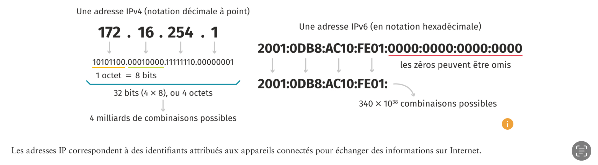
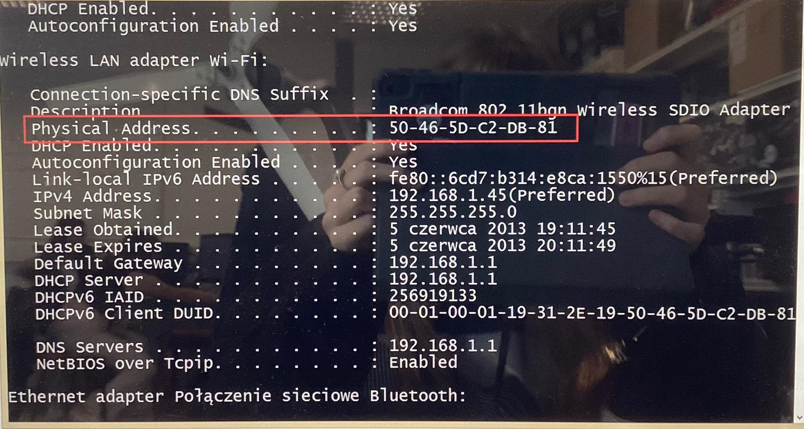
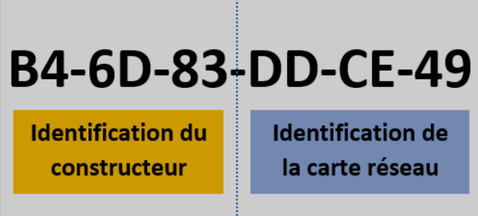
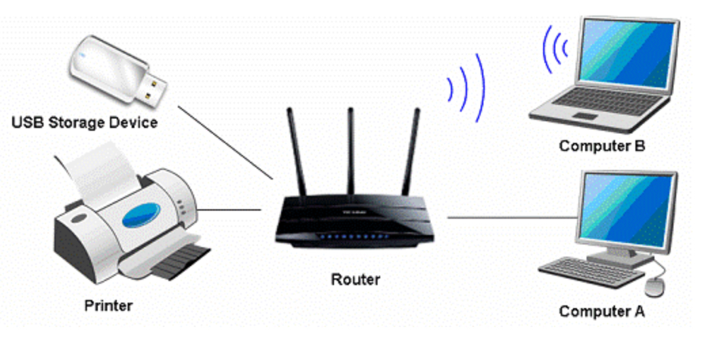

Une IP est un protocole/une chaîne de caractère constituée de 4 groupes de chiffres allant de 0 à 254. --> on parle IPv4
Adresse IP est un nom informatique qui va être donnée à un appareil connecté.
Contrairement à l'IPv4, l' IPv6 est une combinaison quasi illimités

Une IP peut-être être locale, on va donc parler d'une IP LAN (=unique car elle n'est pas la même que votre voisin par exemple), lorsque qu'elle est publique (internet) on va donc dire IP WAN :
Nous pouvons donc joindre l'ordinateur X mais il ne faut pas que l'on se retrouve sur l'ordi Y c'est pour cela que les IP doivent être uniques. Parcontre, un réseau peut avoir la même IP mais pas si nous sommes dans le même réseau. exemple: adresse postale
Les IP peuvent être différents :
l'IP peut-être protégé grâce à des programmes comme NordVPN.
C'est l'identifiant d'un materiel ou d'un appareil. Si l'adresse est libre on peut l'utiliser sans que rien ne change

Dans un réseau, chaque appareil pouvant se connecter est identifié de manière unique par le MAC, quel que soit le réseau sur lequel il est connecté. Il s'agit d'un identifiant distinct de l'adresse IP qui sert quant à elle à localiser un appareil dans un réseau.
Voici un exemple de MAC :

Un routeur est un appareil permettant de créer un réseau Wi-Fi. Il doit être relié à un modem. Il envoie les informations venant d'Internet à nos appareils personnels (ordinateurs, téléphones, tablettes etc.). Ces appareils connectés à Internet chez nous constituent notre réseau local (LAN).
